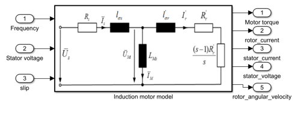

Vienna Car part2
Contents
Induction Motor Model Characteristics
For the first task with the already known constants it's possible to calculate the values for the remaining incognites of the indution motor equivelent circuit.
Starting with the stator current:
With respects to the we obtain the following expression with KVL:
Then we procede to calculate with KCL:
Knowing now the Rotor current we can find the Phase Power on each phase with:
The Mechanical Power is the sum of the Power in the three fases:
Finally, the Torque is given by:
clear clc close all frequency = 0:0.76:76; stator_voltage = 0:0.76:76; slip = 0:0.01:1; slip = fliplr(slip); % torque_sim = sim('induction_motor'); figure(); plot(frequency, abs(torque_sim.torque), 'LineWidth', 1); set( gca, 'FontSize', 11); grid on; title('Torque'); xlabel('Frequancy $[Hz]$','Interpreter', 'latex'); ylabel('Torque [$Nm$]','Interpreter', 'latex');